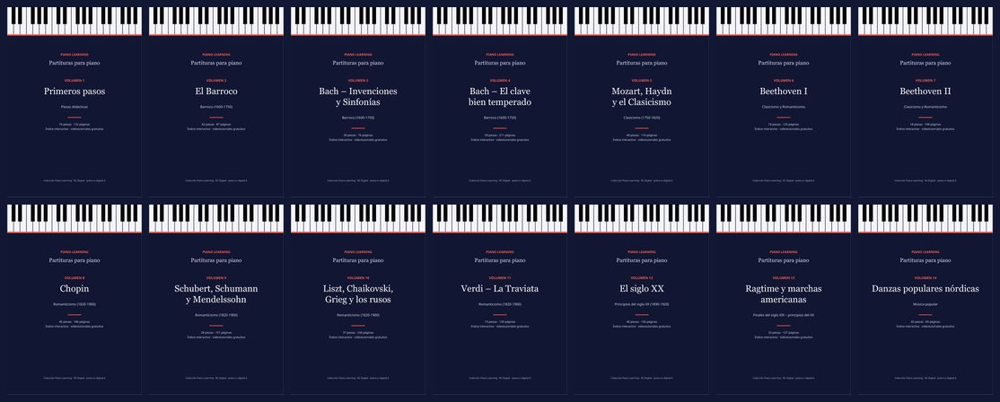
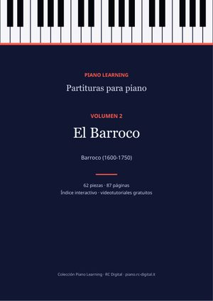
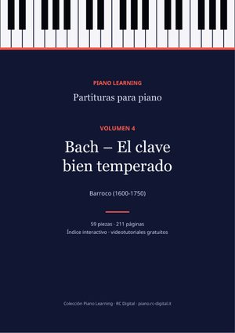
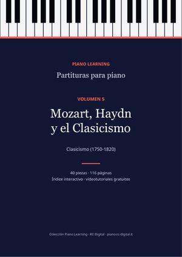
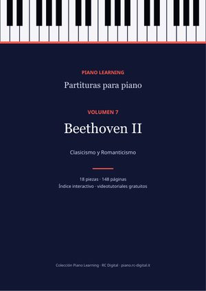
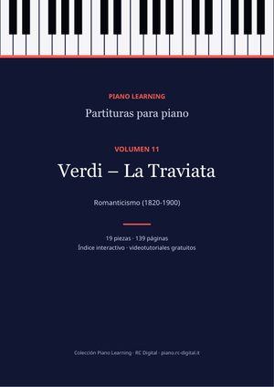
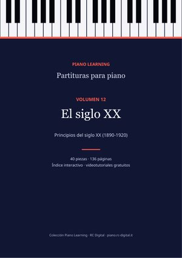
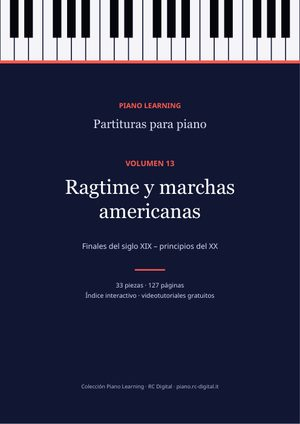
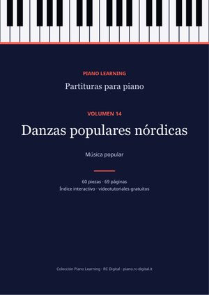

Partituras de piano en PDF
14 volúmenes ordenados por compositor y época, con índice interactivo, biografías de los compositores y el enlace al videotutorial de cada pieza que lo tiene. Cada compra incluye el PDF en 10 idiomas.

🎄 Novedad para NavidadVolumen 15
Villancicos y melodías fáciles
41 piezas · 54 páginas
41 piezas en arreglos fáciles de dos niveles: 16 villancicos y 25 melodías famosas.
3,99 €
ComprarNavidad · 16
- Jingle Bells (Navidad, Navidad)
- Noche de paz
- We Wish You a Merry Christmas
- Deck the Halls
- Oh árbol de Navidad (O Tannenbaum)
- Joy to the World (Al mundo paz)
- Away in a Manger
- Hark! The Herald Angels Sing
- The First Noel
- Adeste Fideles
- God Rest Ye Merry, Gentlemen
- O Holy Night (Cantique de Noël)
- Carol of the Bells (Shchedryk)
- Tu scendi dalle stelle (villancico italiano)
- Danza del Hada de Azúcar
- Auld Lang Syne (Canción de la despedida)
Melodías fáciles · 25
- Hot Cross Buns
- Mary Had a Little Lamb
- Estrellita, ¿dónde estás? (Twinkle Twinkle)
- Frère Jacques (Martinillo)
- Himno de la alegría
- Au clair de la lune
- Alle meine Entchen (Todos mis patitos)
- London Bridge Is Falling Down
- El viejo MacDonald tenía una granja
- Row, Row, Row Your Boat
- Sur le pont d’Avignon
- Brüderchen, komm tanz mit mir (Hansel y Gretel)
- Hickory Dickory Dock
- Kuckuck (Cucú, cucú)
- À la claire fontaine
- Cumpleaños feliz (Happy Birthday)
- When the Saints Go Marching In
- Oh! Susanna
- Itsy Bitsy Spider
- Pop Goes the Weasel
- Red River Valley
- Amazing Grace
- Canción de cuna de Brahms (Wiegenlied)
- Greensleeves
- Danny Boy (Londonderry Air)

La colección completa
Los 14 volúmenes: 564 piezas, 1.933 páginas de música.
Ahorras un 64 % respecto a los 14 volúmenes sueltos (55,86 €).
19,99 €
Comprar Volumen 1
Volumen 1Primeros pasos
Estudios y piezas fáciles: Burgmüller, Czerny, Hanon, Schumann (Álbum para la juventud), Kuhlau.
74 piezas · 132 páginas
3,99 €
Comprar
Volumen 2El Barroco
Bach (minuetos, polonesas, pequeños preludios, corales), Händel, Scarlatti, Rameau, Pachelbel.
62 piezas · 87 páginas
3,99 €
Comprar Volumen 3
Volumen 3Bach – Invenciones y Sinfonías
Las 15 Invenciones a dos voces y las 15 Sinfonías a tres voces, completas.
30 piezas · 76 páginas
3,99 €
Comprar
Volumen 4Bach – El clave bien temperado
Preludios y fugas de El clave bien temperado, Suites inglesas y francesas, Suite BWV 1006a, El arte de la fuga.
59 piezas · 211 páginas
3,99 €
Comprar
Volumen 5Mozart, Haydn y el Clasicismo
Rondó alla turca, Sonata facile, Fantasía en re menor y otros clásicos del siglo XVIII.
40 piezas · 116 páginas
3,99 €
Comprar Volumen 6
Volumen 6Beethoven I
Para Elisa, la sonata «Claro de luna», la Patética, variaciones y sonatas.
18 piezas · 125 páginas
3,99 €
Comprar
Volumen 7Beethoven II
La Appassionata y las grandes sonatas.
18 piezas · 148 páginas
3,99 €
Comprar Volumen 8
Volumen 8Chopin
Los 24 Preludios, Nocturnos, Valses, Estudios y Baladas.
46 piezas · 186 páginas
3,99 €
Comprar Volumen 9
Volumen 9Schubert, Schumann y Mendelssohn
Los 8 Impromptus de Schubert, Escenas de niños, Romanzas sin palabras, Brahms.
28 piezas · 151 páginas
3,99 €
Comprar Volumen 10
Volumen 10Liszt, Chaikovski, Grieg y los rusos
Consolaciones, Las estaciones, Peer Gynt, Cuadros de una exposición y otros románticos.
37 piezas · 230 páginas
3,99 €
Comprar
Volumen 11Verdi – La Traviata
La ópera completa reducida para piano solo, número por número.
19 piezas · 139 páginas
3,99 €
Comprar
Volumen 12El siglo XX
Debussy, Satie, Rajmáninov, Skriabin, Bartók.
40 piezas · 136 páginas
3,99 €
Comprar
Volumen 13Ragtime y marchas americanas
Scott Joplin, John Philip Sousa y otros.
33 piezas · 127 páginas
3,99 €
Comprar
Volumen 14Danzas populares nórdicas
Danzas tradicionales suecas y finlandesas.
60 piezas · 69 páginas
3,99 €
ComprarPago seguro con Payhip y descarga inmediata por correo electrónico. Las partituras son ediciones libres (dominio público o Creative Commons): también las encuentras gratis, pieza por pieza, en las páginas de este sitio; aquí las tienes todas ordenadas en un solo archivo, con los créditos completos de cada edición.